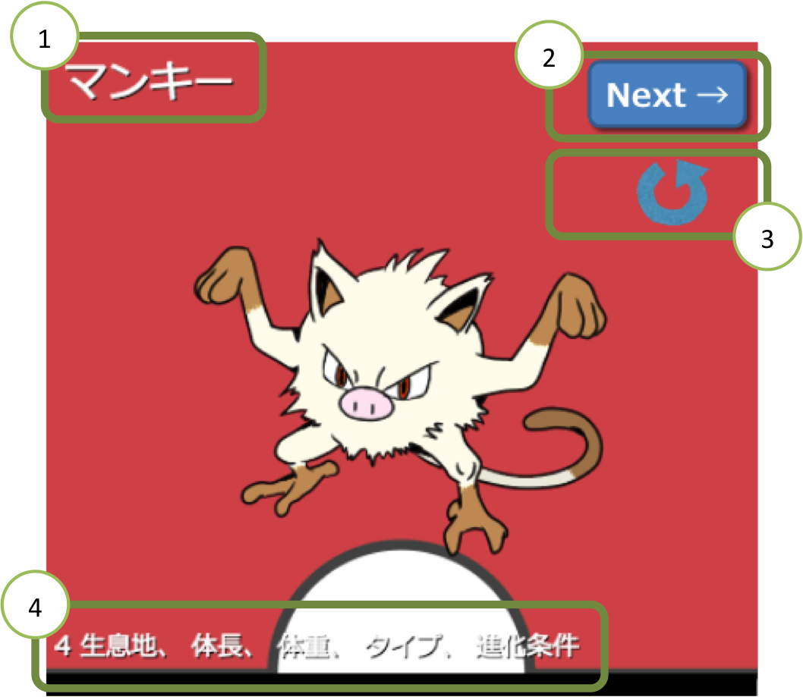

ゲームボードをテーブル中央に広げます。各自、推測コマを6個、得点コマを1個用意します。
ポケモンファウナアプリを起動します。
最近、ポケモンをゲットした人がスタートプレイヤーとなり、第1ラウンドを始めます。
毎ラウンド1種類のポケモンの生息地、体長、体重などを推測します。推測は、ゲームボード上に推測コマを置いて行います。その後で、推測が正解だった人に得点が与えられます。推測がはずれれば得点はありません。最後に、合計得点の最も多い人が勝ちます。
ゲームはラウンド制で行います。1ラウンドは次の順番で行います。
1. 推測コマの配置
2. 得点
3. スタートプレイヤーの交替と次のラウンドの準備
ポケモンファウナアプリに表示されているポケモンをよく見て、推測コマをどこに置くか考えます。スタートプレイヤーから時計回りに、各自推測コマを1個ずつ、ゲームボードに置かなければなりません。推測コマは、推測項目にあり、かつ、空いているマスにしか置けません。(他プレイヤーと同じマスに置くことはできません。)
全員が推測コマを1こずつ置いたら、再びスタートプレイヤーの人から順番に、追加の推測コマを置くか、パスをします。
【追加の推測コマを置く】 自分の番になったら、自分の推測コマを1個、空いているマスに置きます。空いているマスであれば、同じ推測項目においてもかまいません。
【パスする】 推測コマを置きたくない、または置けない場合にはパスします。パスした人は、このラウンドに推測コマを置くことはもうできなくなります。全員がパスするまで何周でも行い、全員がパスしたら、2. 得点移ります。
このラウンドのポケモンを上にスライドさせ、回答を表示させます。ゲームボードの右端の得点表に従って計算します。得点の分だけ、スコアトラックのコマを進めます。
正解または、隣接で得点になった推測コマは持ち主に戻ります。得点にならなかった推測コマは没収となり、ゲームボードのわきに集めておきます。
得点の後、目標点数である100点に誰も到達しなかった場合は、ゲームを続行します。スタートプレイヤーは時計回りに交替します。各自、ゲームボードのわきにある没収されてあ推測コマを (あれば) 1個ずつ手元に戻します。その後、もっている推測コマが2個以下の人は、3個になるまでゲームボードのわきから改修します。
ラウンド終了後に、誰かが目標点数の100点に到達していたらゲーム終了となります。合計得点の最も多い人が照射です。同点の場合は引き分けです。

① ポケモンの名前
② 次のポケモンを表示するボタン
③ 最初からゲームをやり直すボタン
④ 推測する項目